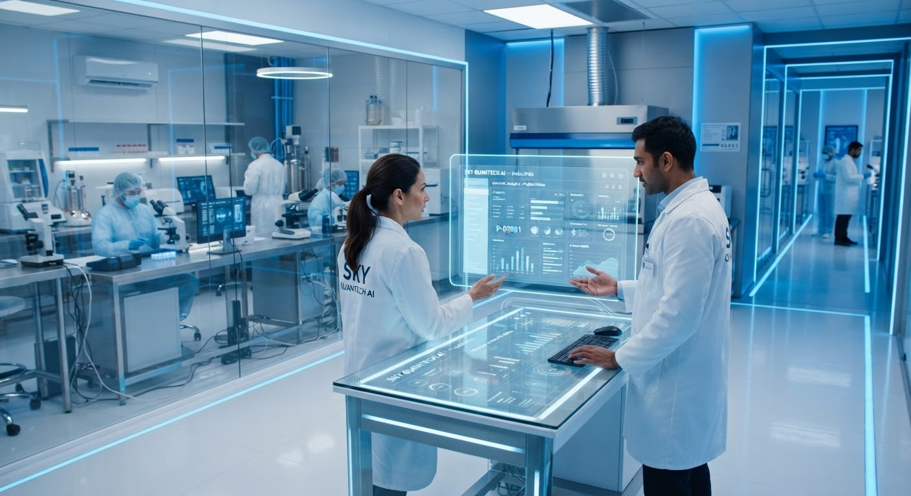
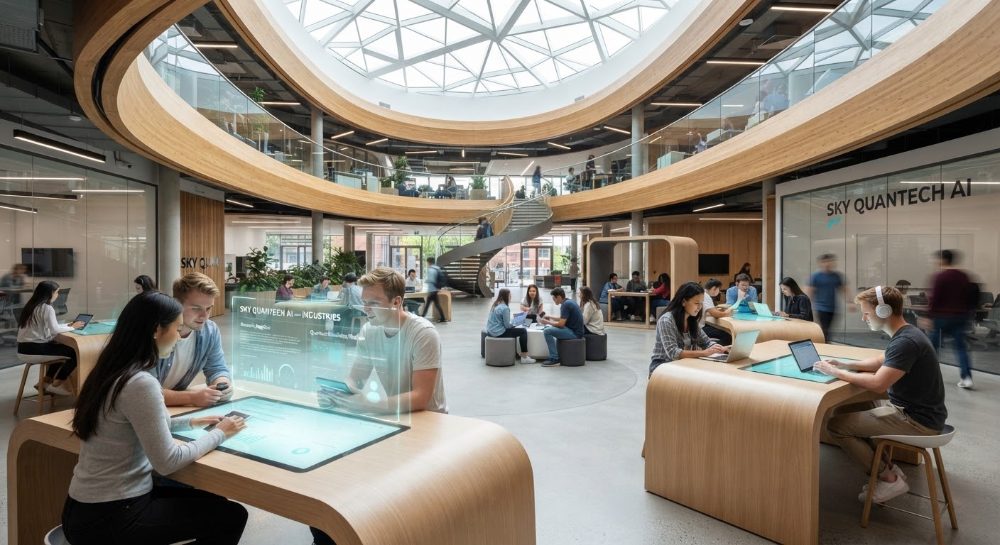
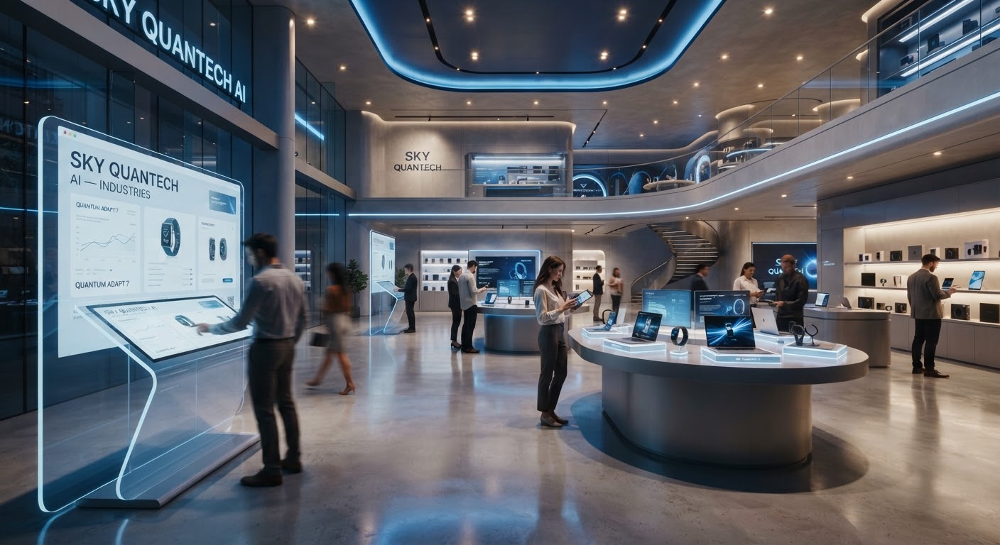

Technology That Adapts to Different Industries
Different industries face different challenges. SKY QUANTECH AI brings AI, software development, automation, and technology consulting together to create solutions around the needs of each organization.
Technology Meets Industry
AI and modern software can be applied in many different environments. The right approach starts with understanding the people, processes, and challenges within each industry.
Structured Field Implementations
Understand
Learn about the organization's environment and requirements.
Identify
Identify the business challenge and technology opportunity.
Design
Develop an appropriate solution approach.
Implement
Build and apply the solution around the agreed requirements.
Technology Supporting Better Healthcare Workflows
Technology can support information handling, digital workflows and operational processes across healthcare environments.
Support practical healthcare workflows and information handling.
Custom applications and digital tools designed for healthcare environments.
Streamline routine administrative processes and document handling.
Organize and manage operational information to support care teams.


Technology for Modern Learning and Institutions
Software, automation and AI can support digital learning environments, administrative workflows and information management.
Intelligent tools to support learning environments and operations.
Modern portals and learning platforms.
Reduce repetitive administrative tasks across academic systems.
Practical reporting and information management.
Technology for Modern Industrial Environments
AI, software and automation can help organizations improve how information, workflows and operational processes are managed.
Visual inspection and monitoring approaches for industrial operations.
Streamline routine manufacturing workflows and operational handoffs.
Custom software systems tailored to operational and inventory needs.
Organize operational data to support decision-making.

Digital Solutions for Modern Retail
Technology can help retail organizations improve digital experiences, workflows and business operations.
Intelligent capabilities to support customer interactions and workflows.
Modern web and mobile applications for retail environments.
Connect order handling, inventory updates, and routine workflows.
Consolidated business reporting and operations insight.
Technology for Financial Operations
Software, automation and AI can support financial workflows, information management and technology-driven business processes.
Assist information processing and routine data extraction.
Scalable applications designed for financial workflows.
Automate repetitive reconciliation and approval processes.
Strategic technology planning aligned with operational requirements.
Technology for Digital Public Services
Modern software, automation and AI can support digital workflows and operational processes within government and public-sector environments.
Accessible digital portals and modern public-facing applications.
Streamline inter-departmental workflows and document approvals.
Support public information retrieval and citizen assistance.
Guidance on technology modernization and digital service architecture.
One Technology Foundation. Different Applications.
The technology capabilities remain consistent. The application changes according to the industry and business requirement.
Artificial intelligence, computer vision, machine learning and data-driven solutions.
Modern software applications and digital platforms built around business requirements.
Workflow and business process automation designed to reduce repetitive work.
Practical technology guidance aligned with business needs.
Matching the technology to how the organization actually operates.
Understand the Industry. Understand the Problem.
Understand
Learn about the organization's environment, constraints, workflows, and unique operational requirements.
Identify
Identify the business challenge, friction bottlenecks, and genuine technology modernization opportunities.
Design
Develop an appropriate solution approach, system architecture, data models, and interface blueprints.
Implement
Build, test, validate, and apply the software solution around the agreed parameters and security standards.
Applied Technology in Action
How our capabilities apply across the industries we work with.
AI in the Real World — Intelligent Visual Inspection
Computer vision can help organizations analyze visual information and support inspection and monitoring workflows. By deploying localized edge classification models on production lines, teams identify anomalies instantly without human fatigue risks.
Technology Works Best in Context
The same technology can solve very different problems depending on the environment in which it is applied. Understanding the industry and the people who use the solution is an important part of building the right technology.
Have an Industry Challenge?
Let's explore how AI, software, and automation can support your organization's specific technical and operational needs.